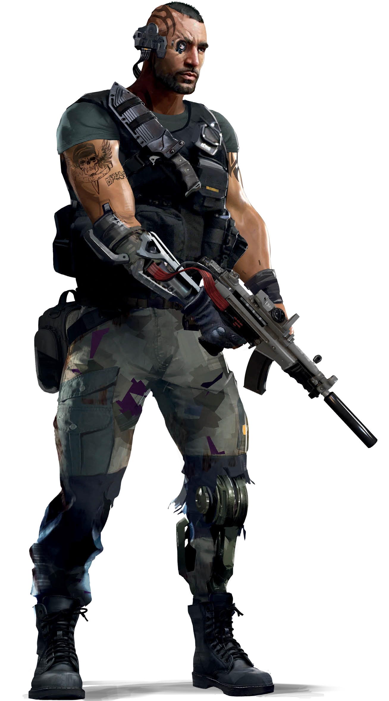
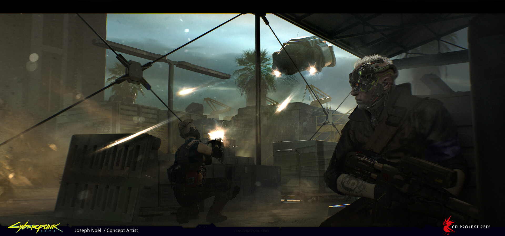

Твоя Работа
Соло - Ролевая Способность

"Почему я вступил? Я устал быть голодным и бедным. Когда Милитех предложил
мне три квадрата в день и койку, ты уж поверь, я даже не раздумывал. Первые пару
заданий были неплохи. А вот на третьем нас размазали. Не знаю почему, но они
послали отряд новобранцев против кучи чуваков, напичканных модами. Только
двое из нас выжили. После войны я вставил новый хром, который мне дали медики
корпорации, и отправился сюда. Оказывается, когда город взорван к чертям и
пытается востановиться, появляется много людей с деньгами для оплаты
работы, если у тебя есть навыки. Хорошо, что они у меня есть"
— Абрил "Мувер" Монтелла, частный наёмник
Ролевая способность Соло — Боевое Чутье. С боевым чутьём Соло
может использовать свои умения, чтобы лучше контролировать
поле боя. Когда начинается бой, в любое время вне боя или в
бою действием, Соло может разделить общее количество очков, которое у него есть в его Ролевой Способности Боевое
Чутье между своими несколькими боевыми способностями.
Если Соло решает не менять распределение очков, его предыдущие значения сохраняются. Активация некоторых из этих
способностей будет стоить Соло больше очков, чем других.
Когда начинается бой (до броска инициативы), в любое время вне боя или в бою в качестве
действия, Соло может разделить общее количество очков, которые у него есть в Ролевой
Способности "Боевое Чутье", между нижеописанными способностями. Если Соло решит
не менять распределение очков, то прежние очки сохраняются. Активация некоторых из
этих способностей Соло требуют больше очков, чем других:
Отражение Урона
Тебя научили «отбиваться от ударов», уменьшая наносимый тебе урон.
- 2 очка — первое повреждение в этом раунде уменьшается на 1.
- 4 очка — первое повреждение в этом раунде уменьшается на 2.
- 6 очков — первое повреждение в этом раунде уменьшается на 3.
- 8 очков — первое повреждение в этом раунде уменьшается на 4.
- 10 очков — первое повреждение в этом раунде уменьшается на 5.
Умелое Обращение
Тебя научили мгновенно восстанавливаться после неудач, не торопясь с каждым
выстрелом. За 4 очка ты игнорируешь критические провалы (1 на кубике), которые выпадают во время атаки.
Однако эти броски по-прежнему считаются единицей.
Личная Инициатива
Твои рефлексы отточены до молниеносного уровня. Ты не задумываясь, реагируешь на происходящее.
Каждое 1 очко добавляет +1 к Инициативе.
Точная Атака
Тебя тренировали наносить прицельные удары, что повышает точность.
- 3 очка — +1 к любым броскам на попадание.
- 6 очков — +2 к любым броскам на попадание.
- 9 очков — +3 к любым броскам на попадание.
Выявление Слабостей
Тебя учили видеть слабые места, чтобы делать больно даже тяжелобронированным целям.
Каждое очко добавляет +1 к урону (до брони) твоей первой успешной атаке в раунде.
Обнаружение Угроз
У тебя повышенное чутье. Каждое 1 очко даёт +1 к любым проверкам внимательности
